Find my size helps shoppers pick the right size. It is part of the Pro add-on.
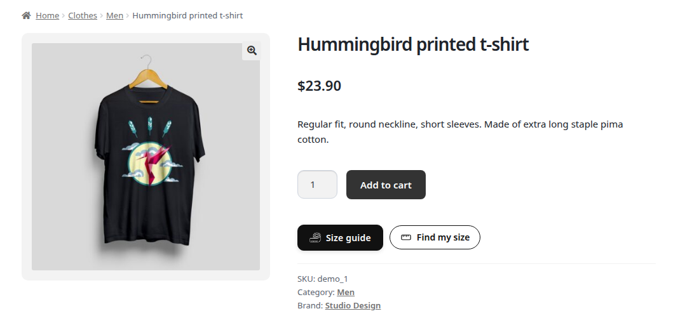
A product page with the Size guide and Find my size buttons.
Turn it on per chart in General > Find my size (Enable or Disable). It reads the chart automatically.
Charts without body measurements never show it. Name rows or columns like Chest, Waist, Hips, Inseam, Foot length or Head.
The shopper can choose I know my measurements, or use Quick estimate from height and weight (cm/kg or inch/lb, Women/Men, chest and shoulders Narrow/Average/Broad, fit Snug/Regular/Relaxed).
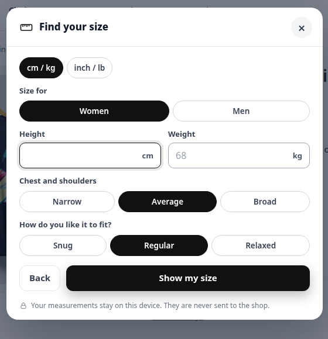
The Find my size questions.
The result shows the recommended size with a match percentage and a fit explanation per body part.
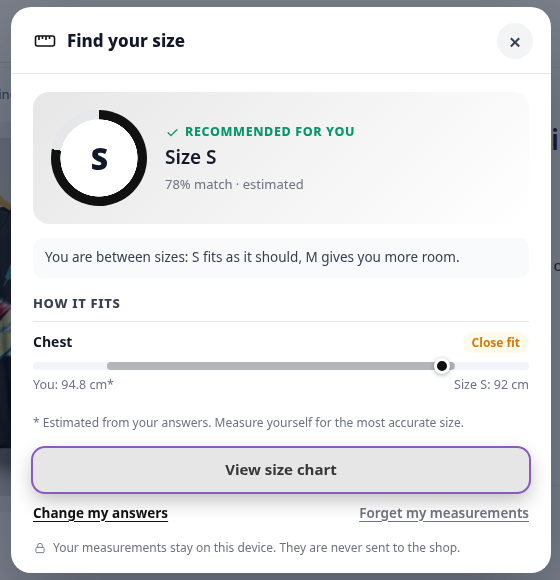
The recommended size with a fit explanation.
The result offers View size chart, Change my answers and Forget my measurements. On variable products, the size can be selected.
The calculation runs in the browser. Measurements stay only on the shopper's device (localStorage). They are never sent to the shop or to ILM Tech.
Edit a chart. On the General tab, Find my size is enabled for every new chart. There is nothing to set up: it reads the chart.
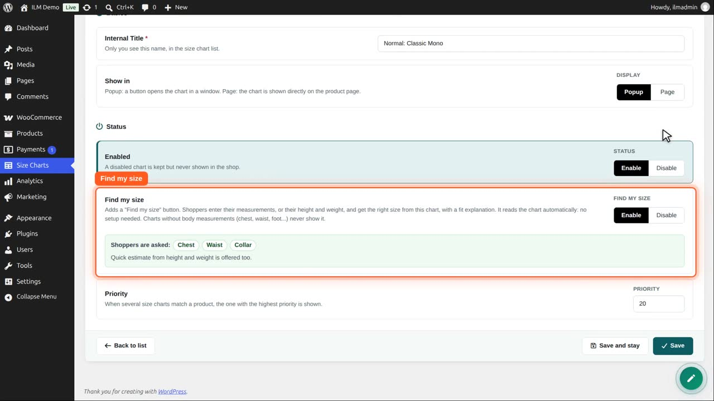
Below the switch you see what shoppers will be asked, taken from the measurement names in your table: here chest, waist and collar.
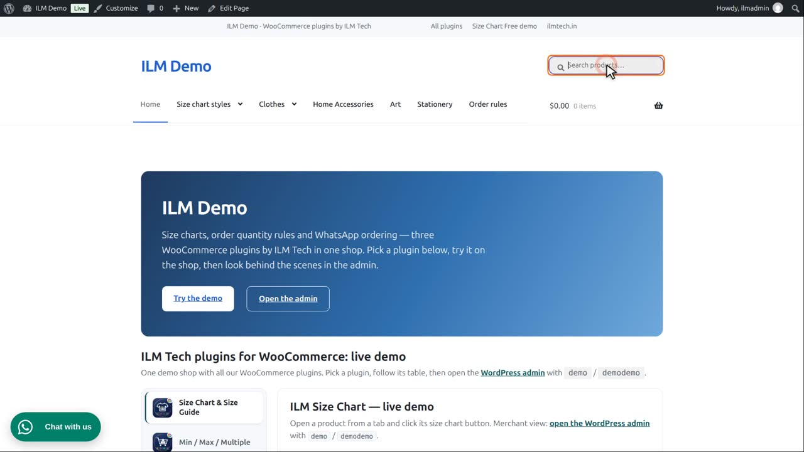
In the shop, the shirt now has a Find my size button next to the size chart button.
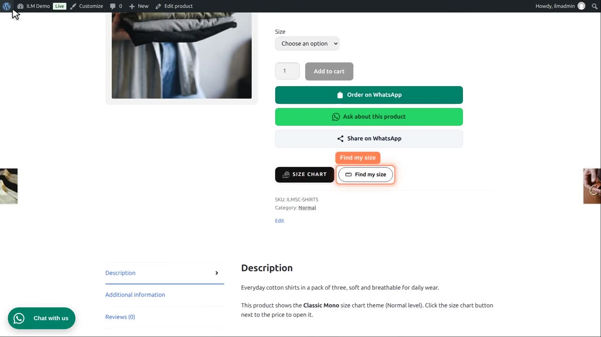
The shopper clicks it and chooses: measure with a tape, or a quick estimate from height and weight.
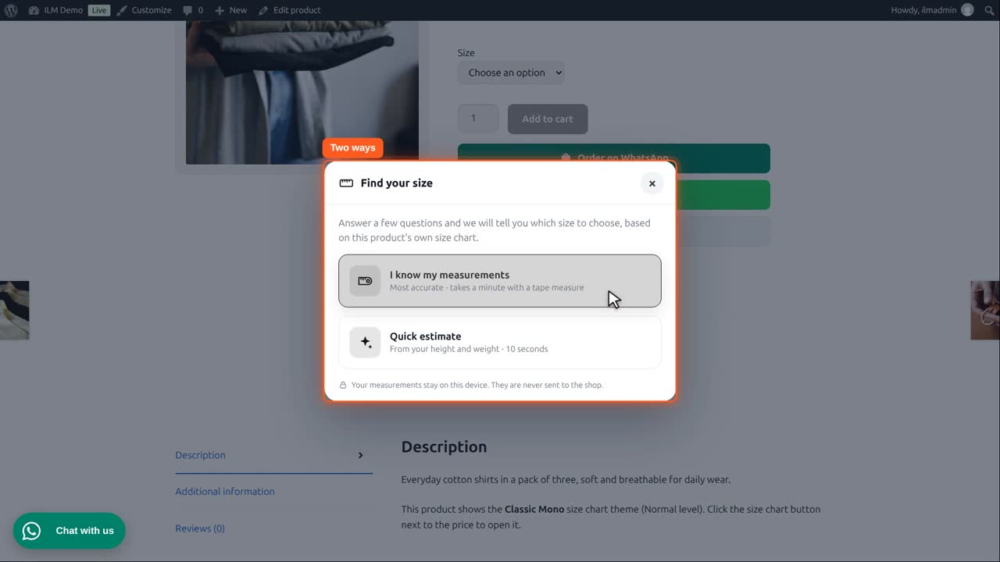
With the tape: they type their chest, 100 centimetres, and their waist, 94. Every field they can leave empty is optional.
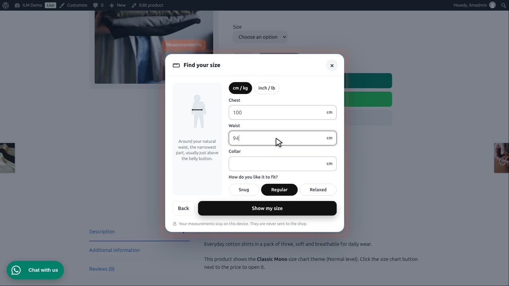
The result: size M, and why: how each measurement fits that size.
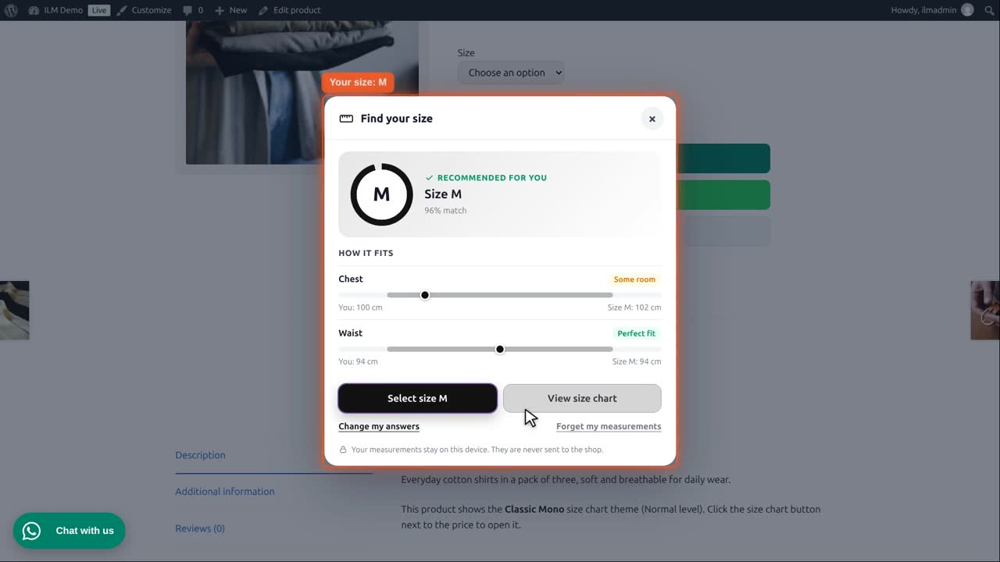
One click chooses size M on the product, and the button now says: your size, M. The size is remembered on other products too.
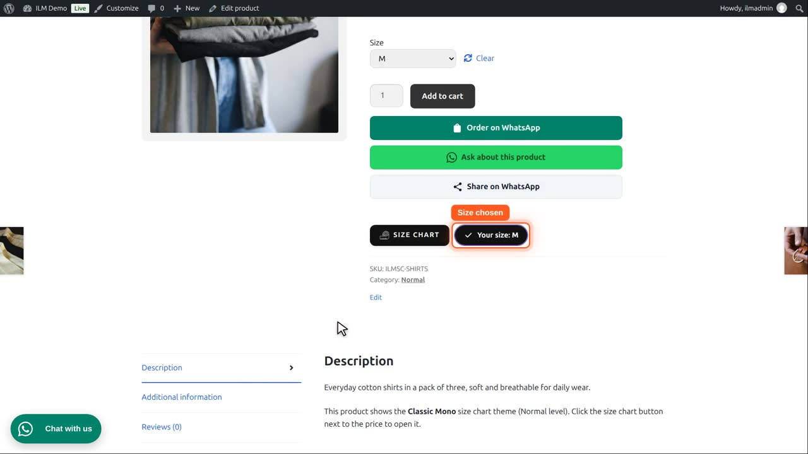
In the size chart, the M column is marked for this shopper.
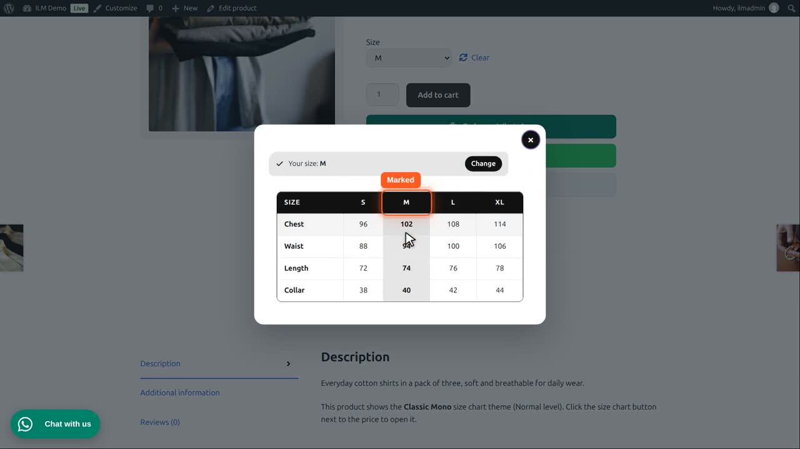
Opened again, it shows the result straight away. Forget my measurements clears them. The quick estimate asks only height and weight. It is offered for clothes; for rings or shoes, a tape measurement is needed.
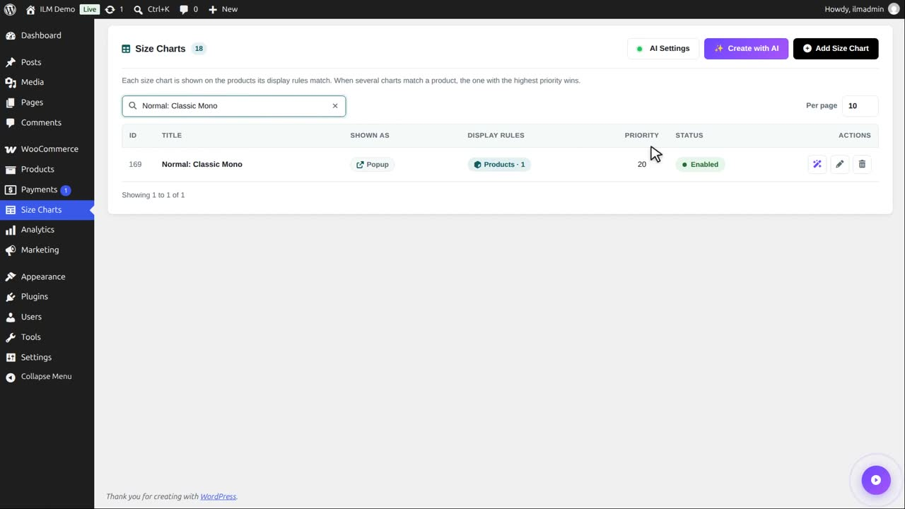
To hide it for one chart, click Disable here and save. Charts without body measurements, like mugs or posters, never show the button.